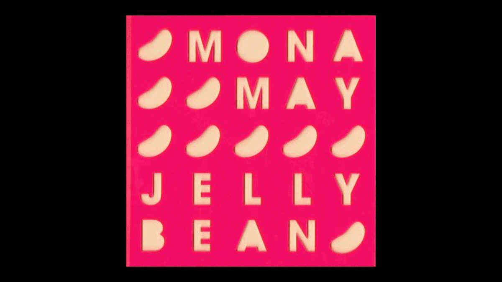
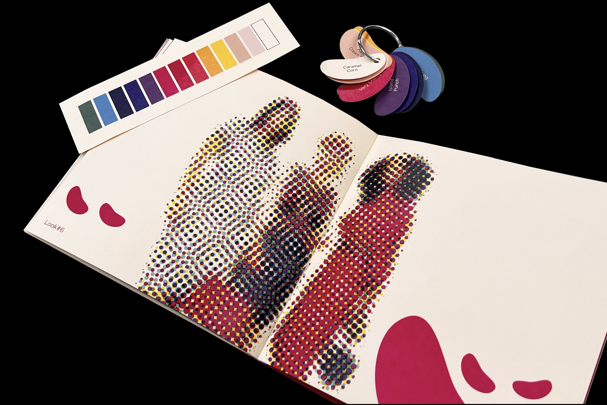

A book design for a fashion runway show of Mona May. In this design project, I developed a theme of Jelly Beans inspired by the vivid and energetic color palette choice of the fashion outfits designed by Mona May. The laser cut cover on a clear neon pink acrylic board reflected the texture of physical candy. Jelly Bean shaped color palettes named by the official flavors of Jelly Beans were in a form of keychain as a playful element to interact with the audience and the reader.

